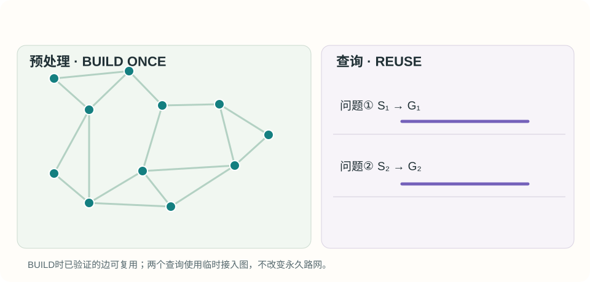
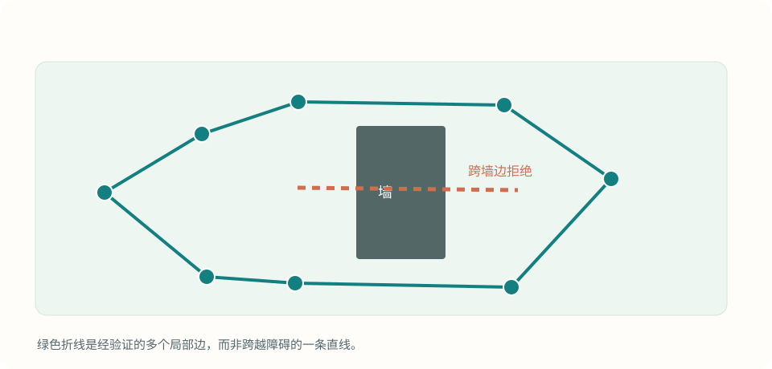
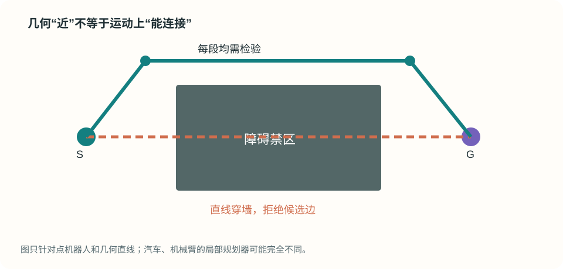

PRM：把一次探索变成可以反复查询的地图
用采样点构造自由空间路网，区别离线构图与在线查询的成本；理解连通性、局部规划器、PRM* 以及多次起终点搜索为何能复用同一份路网。
假设一个机械臂每天都在同一车间执行不同取放任务
如果每次只改变抓取起点与目标点，障碍环境基本不变，那么为每组起终点重新长出一棵探索树可能浪费大量重复的碰撞查询。Probabilistic Roadmap（PRM）将运动规划分成两个阶段：预处理（Learning / Construction）先在自由构型空间里积累一个稀疏的无碰撞连接图；查询（Query）再把新的起终点接入图，通过 Dijkstra 或 A* 找到节点序列。
这种思想在 Kavraki、Švestka、Latombe、Overmars（1996）的经典论文中得到系统化。PRM 比 RRT 更强调可复用的环境图结构：它通常是含环的无向图，而 RRT 的树结构中每个新顶点只有一个父节点。
PROBABILISTIC ROADMAP · 13

建图：采样、找邻域、局部碰撞验证
第一步，从自由构型空间 X_free 采样多个合法状态。第二步，为各状态查找一定数量的近邻（k-nearest）或一个距离半径内的候选点。第三步，对候选点对运行局部规划器（例如二维点机器人的直线连接），仅把整条局部运动合法的边加入邻接表。若使用无向边，两端都要记录相同的连接与成本。
预处理复杂度不仅由样本数决定，还由最近邻查询、每条候选边的碰撞检测和连边规则决定。简单的全距离排序实现易读，却不适合直接用在极高维、百万状态的真实场景。
PROBABILISTIC ROADMAP · 13

查询：把新的 S/G 接入图再进行最短路径搜索
查询阶段要先确认 S 和 G 都是合法构型，然后分别尝试与 nearby roadmap 节点建立合法连接。将两端加入临时的图视图后，在图上按照目标代价求最短路。得到的是离散节点间的路线序列，真实运动仍须遵守对应局部边的可行性定义。
如果 S/G 连不上已建好的图，或两个端点分别落在不同连通分量里，当前 PRM 查询返回失败；这并不能证明自由构型空间不存在连续可行路径。可以补采窄通道、调整局部连边，或采用适合该问题的其它规划器。
复用意味着什么：静态障碍与机器人足迹、状态空间及碰撞语义保持不变时，可以复用已验证的边。若墙体移动、机器人负载尺寸变化，旧边必须按新的环境合法性重新审查。
为什么几何上很近的节点仍可能不相邻
两个点隔着一堵薄墙，在欧氏距离上可能非常近，却没有合法直线连接；在狭长通道里，绕过障碍需要一系列近邻短边而不是跨墙捷径。PRM 的图边是经过局部路径验证的状态转移，不是“几何最近”这个关系本身。
对于有运动方向与朝向约束的机器人，连边不一定能逆向执行，也未必能使用同一段线性插值；此时要改变局部规划器和图的有向性。多个查询共享的“roadmap”必须以相同的动力学/足迹定义构建，不能仅看它在二维俯视图上连通。
PROBABILISTIC ROADMAP · 13

固定 k 的 PRM 不等于渐进最优的 PRM*
通常所说的基础 PRM 使用有限的随机样本和近邻连边，实践中可以给出可行路径，但固定 k 个邻居并不自动拥有渐进最优的理论结论。Karaman 与 Frazzoli（2011）引入 PRM* 与 RRT*；在合适的自由空间、采样和连接参数条件下，随着 n 增长最优图路径代价几乎必然趋于连续空间的最优代价。
PRM* 的理论策略之一是将连边半径设为 γ(log n/n)^(1/d) 的阶（γ 需满足证明下界），或采用适当增长的 k-nearest 策略。它不是把任意现成 PRM 改名，也不是固定使用图像里 10 个邻居就一定成立。
| 方法 | 构造 | 理论与实践边界 |
|---|---|---|
| PRM（基础） | 自由样本 + 有效局部边 + 图查询 | 倾向多查询；固定参数不直接保最优 |
| PRM* | 随样本增长调连接规则 | 满足假设时有渐进最优保证 |
| LazyPRM | 先建候选边，按需求延迟碰撞验证 | 减少部分无用验证，但返回前仍须验证实际路线 |
| RRT | 从单起点持续生长树 | 偏向单次查询与快速找到可行路径 |
一个固定种子、两个独立查询的可运行 PRM
为了说明可复用性，下面的 Python 3.10+ 程序用 130 个固定种子的随机自由点构建一次无向 roadmap；构建时对每个节点提出至多 k=9 个近邻候选。两个查询分别是 (1,5)→(9,5) 与 (1,4)→(9,4)，查询时复制邻接表、临时加入 S/G，运行 Dijkstra。第二次查询不重新采样或改写原始路网。
from random import Random
from math import dist, inf
from heapq import heappush, heappop
class Roadmap:
"""点机器人、静态环境；同一份roadmap支持多次独立查询。"""
def __init__(self, seed=29, count=130, k=9):
rng=Random(seed)
self.points=[]
while len(self.points)<count:
q=(10*rng.random(),10*rng.random())
if self.free(q):
self.points.append(q)
self.graph=[{} for _ in self.points]
for i,p in enumerate(self.points):
nearest=sorted(
(j for j in range(count) if j!=i),
key=lambda j:dist(p,self.points[j]))[:k]
for j in nearest:
if self.visible(p,self.points[j]):
w=dist(p,self.points[j])
self.graph[i][j]=w
self.graph[j][i]=w
def free(self,p):
x,y=p
return (0 <= x <= 10 and 0 <= y <= 10
and not (4 <= x <= 6 and 3 <= y <= 7))
def visible(self,a,b):
# 离散采样精度仅对玩具场景有意义；非连续安全证明
n=max(1,int(dist(a,b)/.07)+1)
return all(self.free((a[0]+(b[0]-a[0])*i/n,
a[1]+(b[1]-a[1])*i/n))
for i in range(n+1))
def query(self,start,goal):
if not (self.free(start) and self.free(goal)):
return inf,None
size=len(self.points)
nodes=self.points+[start,goal]
s,t=size,size+1
# 查询阶段只修改临时邻接表，不污染长期roadmap。
adj=[edges.copy() for edges in self.graph]+[{},{}]
for endpoint in (s,t):
near=sorted(range(size),
key=lambda j:dist(nodes[endpoint],nodes[j]))[:10]
for j in near:
if self.visible(nodes[endpoint],nodes[j]):
w=dist(nodes[endpoint],nodes[j])
adj[endpoint][j]=w
adj[j][endpoint]=w
heap=[(0.,s)]
best={s:0.}
parent={}
while heap:
d,u=heappop(heap)
if d!=best.get(u,inf): continue
if u==t:
ids=[u]
while u in parent:
u=parent[u]
ids.append(u)
return d,[nodes[i] for i in ids[::-1]]
for v,w in adj[u].items():
candidate=d+w
if candidate<best.get(v,inf):
best[v]=candidate
parent[v]=u
heappush(heap,(candidate,v))
return inf,None
roadmap=Roadmap()
edges_before=sum(len(v) for v in roadmap.graph)
a=roadmap.query((1.,5.),(9.,5.))
b=roadmap.query((1.,4.),(9.,4.))
assert a[0]<inf and b[0]<inf
assert a[1][0]==(1.,5.) and a[1][-1]==(9.,5.)
assert b[1][0]==(1.,4.) and b[1][-1]==(9.,4.)
assert edges_before==sum(len(v) for v in roadmap.graph)
assert all(roadmap.visible(x,y) for x,y in zip(a[1],a[1][1:]))
print("two queries on one roadmap; sample nodes:", len(roadmap.points))代码以离散间隔 ≤0.07 检查直线，所以不是连续碰撞安全证明。断言检查两个查询成功、端点正确、原始邻接度数未被查询污染，以及第一条路上所有边经过相同的验证器。代码是基础 PRM，不是 PRM*、LazyPRM 或高维机械臂规划器。
PRM 何时更有吸引力，何时应该重新规划
如果场景静态且会反复问很多起终点问题，PRM 可将采样/碰撞开销摊到大量查询上。反之，环境变化很频繁、只有一个起终点，或者前期构图过于昂贵，预处理投资可能不值得。窄通道、高维复杂障碍、碰撞检查成本与端点接入困难，也可能决定整体成功率。
对比 PRM、RRT 和 RRT* 时，必须清晰区分预算：PRM 的预处理时间与每次查询时间要分开汇报；RRT 的全部树生长通常属于某次查询。仅比较“查询阶段 5 ms 对 RRT 50 ms”却忘记 PRM 预处理，不是公平基准。